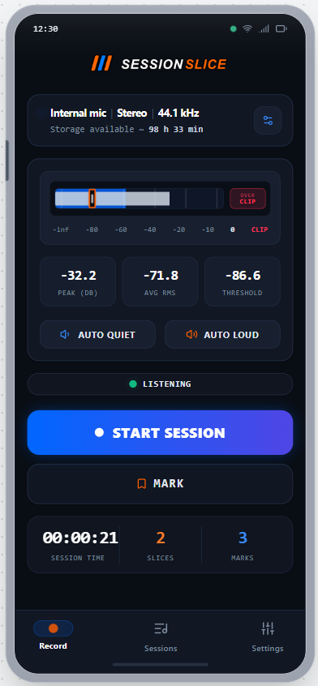
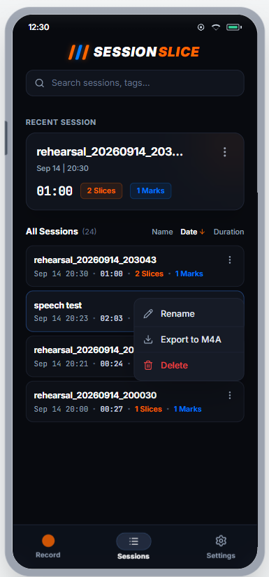
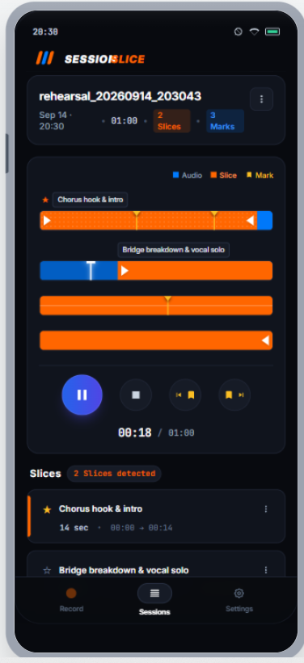

Capture the full Session
Record mono or stereo PCM audio at 48 kHz or 44.1 kHz without interrupting the rehearsal.
Built for audio sessions
Record the whole session in lossless audio. SessionSlice detects the parts that matter, then lets you refine, name, play, and export each Slice.
One session. Every useful moment.
SessionSlice keeps one continuous master recording while level-based detection marks individual playing sections for you.
Record mono or stereo PCM audio at 48 kHz or 44.1 kHz without interrupting the rehearsal.
Automatic detection identifies playing ranges. Add Marks live or create and refine Slices afterward.
Name, audition, and export selected Slices as lossless WAV or compact M4A files.
Designed for the rehearsal room
Live levels, searchable Sessions, and an editable timeline keep the important work close at hand.



Android 8.0 and newer
The Google Play download link will appear here when the public listing is live. The QR code can point to this permanent page, so printed material will not need to change.
Coming to Google PlayPublic-site QR code will be inserted after the GitHub Pages URL is known.